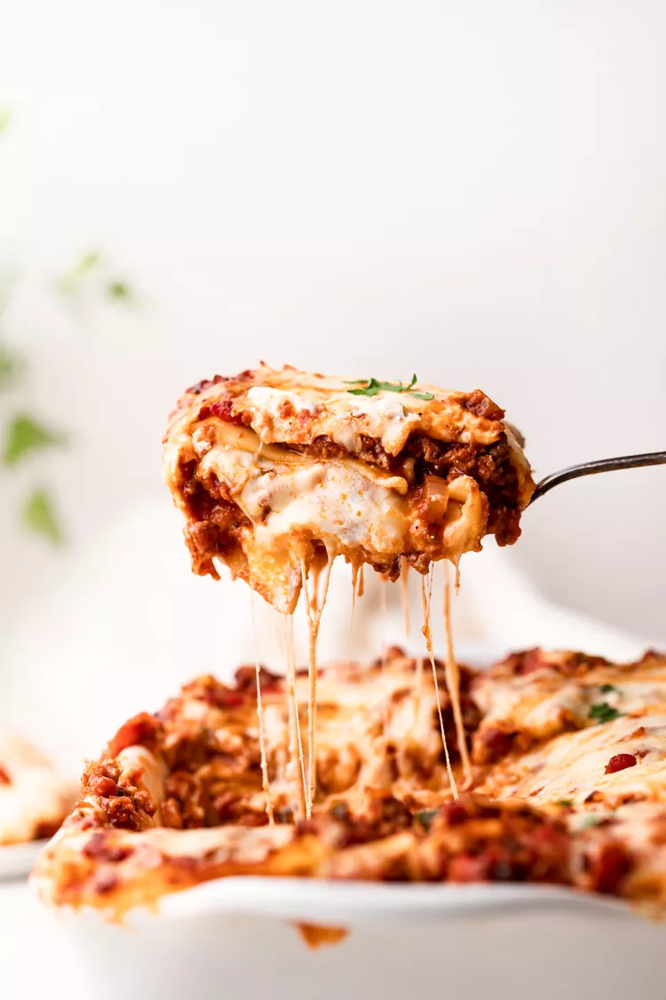

Lasagna Recipe

World's Best Lasagna
Making lasagna can be time-consuming, but the results are well worth the
wait. You'll find a detailed ingredient list and step-by-step instructions
in the recipe below, but let's go over the basics:
Lasagna Ingredients
The Allrecipes community adores this lasagna recipe because it's
incredibly customizable, so you can easily alter the ingredient list to
suit your needs. If you want to stay true to the original recipe, though,
these are the ingredients you'll need to add to your grocery list:
- 9 lasagna noodles, cooked and drained
- 1 pound (450g) ground beef
- 1 onion, chopped
- 2 cloves garlic, minced
- 1 can (28 ounces) crushed tomatoes
- 2 cans (6 ounces each) tomato paste
- 2 cans (6.5 ounces each) tomato sauce
- 1/2 cup water
- 2 tablespoons sugar
- 2 teaspoons dried basil leaves
- 1/2 teaspoon salt
- 1/4 teaspoon black pepper
- 3 cups shredded mozzarella cheese
- 1 1/2 cups ricotta cheese
- 1/4 cup grated Parmesan cheese
- 2 tablespoons chopped fresh parsley
How to Make Lasagna Step-By-Step
Here's a very brief overview of what you can expect when you make homemade
lasagna:
- Preheat your oven to 375°F (190°C).
-
In a large skillet over medium heat, cook the ground beef, onion, and
garlic until the beef is browned and the onion is tender. Drain excess
fat.
-
Stir in crushed tomatoes, tomato paste, tomato sauce, and water. Add
sugar, basil, salt, and pepper. Bring the mixture to a boil, then reduce
heat and let it simmer for about 30 minutes, stirring occasionally.
-
In a separate bowl, combine the ricotta cheese and 2 cups of mozzarella
cheese.
-
In a 9x13-inch baking dish, layer the lasagna as follows: spread a thin
layer of the meat sauce on the bottom, place 3 noodles on top, spread a
third of the ricotta cheese mixture over the noodles, sprinkle with a
little mozzarella cheese. Repeat the layers, ending with the meat sauce
on top.
-
Sprinkle the Parmesan cheese over the top, cover with foil (tent it
slightly so it doesn't touch the cheese), and bake in the preheated oven
for 25 minutes.
-
Remove the foil and bake for an additional 25 minutes, or until the
lasagna is hot and bubbly.
-
Let it stand for 15 minutes before serving. Garnish with chopped parsley
before serving, if desired.